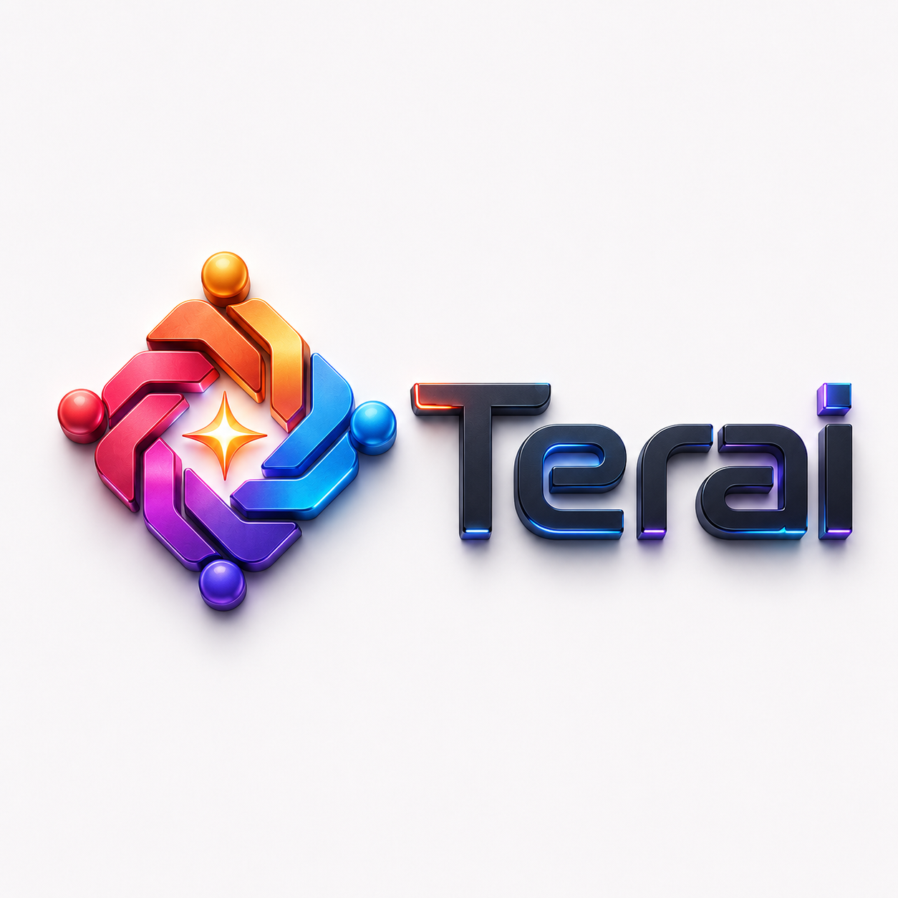

40%
Lowered average GPU-inference queue wait time through distributed worker routing.
Springfield, Missouri · Software Engineering
Backend, data, and applied AI systems
I like the part of engineering where a system has to hold up: the queue has to move, the data has to be useful, and the edge cases have to be handled. I am pursuing my M.S. in Computer Science while building BankingApp and deepening my work in Python, C#, PostgreSQL, and practical AI systems.
What I have delivered
Lowered average GPU-inference queue wait time through distributed worker routing.
Improved PostgreSQL retrieval time from 900 ms to 180 ms on datasets over 10M rows.
Reduced manual preprocessing by automating PDF and whitepaper ingestion.
Configured Cisco and Aruba devices across production hospital infrastructure.
Deployed a containerized .NET banking application with Azure Container Apps, Azure SQL, and GitHub Actions quality checks.
Shipped three internal tools from ambiguous business needs to documented API contracts and working delivery.
Experience
Selected work
A mix of backend engineering, applied ML, and product work-each grounded in a real system, not just a concept.

Product walkthrough · 1 min 25 sec
Secure banking workflows with .NET
Built a banking application around the parts that should never be casual: money movement, identity, and account ownership.
C# · .NET 10 · ASP.NET Core · EF Core · SQL Server · Docker · Azure · xUnit

Meeting intelligence from raw audio
A modular pipeline for turning recordings into structured, speaker-aware meeting data that can support downstream analysis.
Python · WhisperX · Pyannote · spaCy · Sentence Transformers

A platform built for entrepreneurs
Architected and launched an end-to-end platform for entrepreneurs, taking it from product direction through App Store release.
Flutter · PostgreSQL · Docker · Supabase · Cloudflare
Additional projects
These projects reflect the experiments and systems work that helped shape the way I build today.
LLM fine-tuning and full-stack delivery
Fine-tuned a Llama 3.1 8B model with LoRA on a domain corpus, then paired it with a Flask API and Flutter client for a focused question-answering experience.
Python · PyTorch · LoRA · Flask · Flutter · Hugging Face

Distributed queue and data-platform optimization
Built queue-routing, document-ingestion, and database-tuning workflows to make internal AI operations faster and easier to run.
Python · PHP · PostgreSQL · Linux · Distributed Systems

AI-assisted drafting workflow
Created a workflow for turning a starting topic or video into organized blog ideas and early drafts, with an emphasis on speeding up the blank-page stage.
Python · AI workflows · Content automation
Technical toolkit
Python, C#, TypeScript, SQL, HTML, CSS
ASP.NET Core, EF Core, Flask, Django, REST API design
PostgreSQL, schema design, indexing strategies, query optimization, data pipelines
Docker, Azure, GCP, GitHub Actions CI/CD, Git, Linux
Education & recognition
Missouri State University
Missouri State University · GPA 3.41 / 4.0 · Minors in Cybersecurity and Mathematics
Thesis direction: I am actively narrowing a topic for my master’s thesis, with the goal of carrying out original research and publishing the resulting paper.
Get in touch
I’m interested in software engineering roles where thoughtful backend work, reliable data systems, and useful AI products meet.